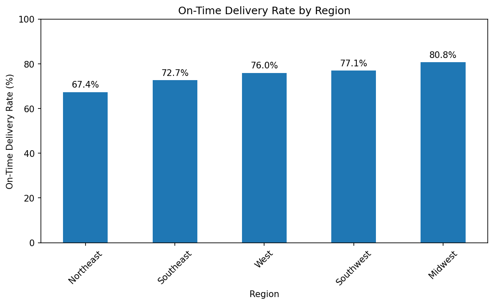
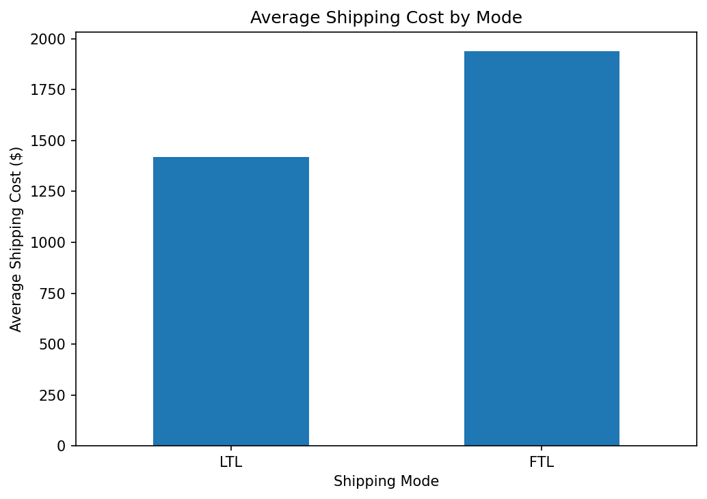

Project Overview
Key performance indicators from 240 fictional shipments.
Data Visualizations
Explore regional delivery performance and shipping costs.
On-Time Delivery by Region

The Northeast has the lowest on-time delivery rate in this dataset.
Average Shipping Cost by Mode

FTL shipments have a higher average cost per shipment than LTL.
Business Insights
What the results could mean for logistics operations.
01. Regional Delivery Performance
On-time delivery ranges from 67.4% in the Northeast to 80.8% in the Midwest. Investigating regional delays may help improve service reliability.
02. Shipping Method Costs
FTL has a higher average shipment cost than LTL. A fair comparison should also consider distance, shipment size, and service needs.
03. Carrier Performance
Comparing carrier costs and delivery rates can help identify opportunities for further investigation and improvement.
04. Recommended Next Step
Investigate late shipments in the Northeast and review transit times, distances, and carrier performance before changing operations.
All data is synthetic and created for portfolio practice. These results do not represent the performance of a real company.
Tools & Skills
Technologies and analysis methods demonstrated in this project.
About This Project
This portfolio project combines logistics knowledge with data analytics to examine shipment performance and costs. The goal is to turn shipment records into clear measurements and practical business recommendations.
The analysis uses a fictional dataset to demonstrate analytical methods, Python skills, and the communication of business findings.
View project files on GitHub →